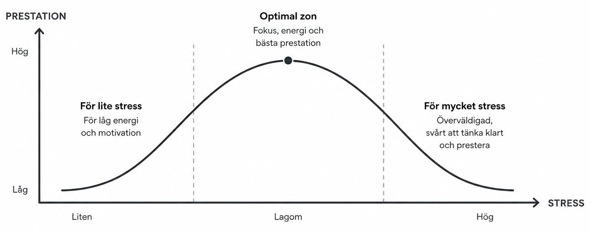

Koncept
Stress är inte alltid farligt. Kortvarig stress inför något viktigt kan göra kroppen mer alert. Men stress som pågår länge, känns övermäktig eller inte följs av återhämtning är något du behöver ta på allvar.
Distress (skadlig)
Kronisk och överväldigande
Kroppen alltid på helspänn
Stör sömn och
koncentration
Leder till utmattning
Eustress (kan vara positiv)
Kortvarig och uppgiftsrelaterad
Ökar fokus och energi
Motiverar till
handling
Följs av återhämtning

Exempel
Andreas och Nadja har prov imorgon. Båda känner exakt samma sak i kroppen, men deras tolkning är helt olika.
Andreas
Jag är stressad, jag misslyckas
Hjärtat slår snabbt = ett hot
Fokuset splittras
av oro
Presterar under sin förmåga
Nadja
Kroppen gör mig redo
Hjärtat slår snabbt = energi
Fokuset skärps, jag är
alert
Kan använda energin bättre
Diskussion i par – 60 sekunder
Tänk på en situation du brukar bli stressad i. Är det distress eller eustress?
Agera